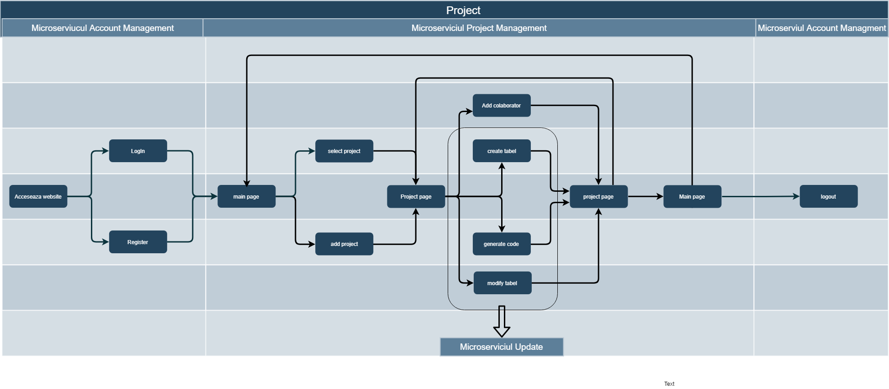

Developers Help page
Why was this application created:
This web application was created as part of the web technologies at infoiasi for developers in order to help them with an easier method to manage projects and their databases working even on their mobile devices or working with other people.
For who was this application created:
This application was mainly created for developers but it can be used by anyone in order to store their projects data.
What is our application doing:
You can create new projects or edit(delete) the old ones you already have.
You can add partners to your projects by using our "Collaborate" function (or you can even delete your partners).
You can execute any SQL query or you can even convert a SQL query into a Java or Php source-code.
How it it doing these:
Our application is built using microservices web as it states in this flow diagram:

This diagram shows exactly how every microservice has his own job and in order to show how he does that we used some UML Diagrams:
 This Diagram is the Account Management microservice. A new user enters our web page so we treat him as an "User" but after log in he becomes an "LoggedUser".
As an "LoggedUser" he has many more options in the menu bar and can start working on his projects.
This Diagram is the Account Management microservice. A new user enters our web page so we treat him as an "User" but after log in he becomes an "LoggedUser".
As an "LoggedUser" he has many more options in the menu bar and can start working on his projects.
 This Diagram is the Project Management microservice. A user can create a new project or modify an already created one.
He can create tabels or modify them.We have an option to add a partner and one to delete him,where we need the partner's username.
This Diagram is the Project Management microservice. A user can create a new project or modify an already created one.
He can create tabels or modify them.We have an option to add a partner and one to delete him,where we need the partner's username.
 This Diagram is the Update Management microservice. A user can enter a SQL Query and get the selected data or he can get source-code for a selected language.
This Diagram is the Update Management microservice. A user can enter a SQL Query and get the selected data or he can get source-code for a selected language.
Next in line we have the databases diagram where we separate every microservice's databases:
Every microservice has his own database where it stores data in order to be efficient.
In order to better understand how our application is working we made a MVC Diagram:
 It clearly explains how every microservice has his own job to do and what is his job.
The controller shows the client everything that he can do on our website.
It clearly explains how every microservice has his own job to do and what is his job.
The controller shows the client everything that he can do on our website.